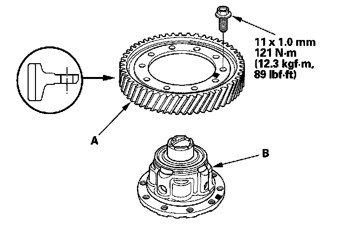

Differential Carrier, Final Driven Gear Replacement
Differential Carrier, Final Driven Gear Replacement1. Remove the bolts (left-hand threads) in a crisscross pattern in several steps, then remove the final driven gear (A) from the differential carrier (B).

2. Install the final driven gear with the chamfer on the inside diameter facing the carrier. Tighten the bolts in a crisscross pattern in several steps.